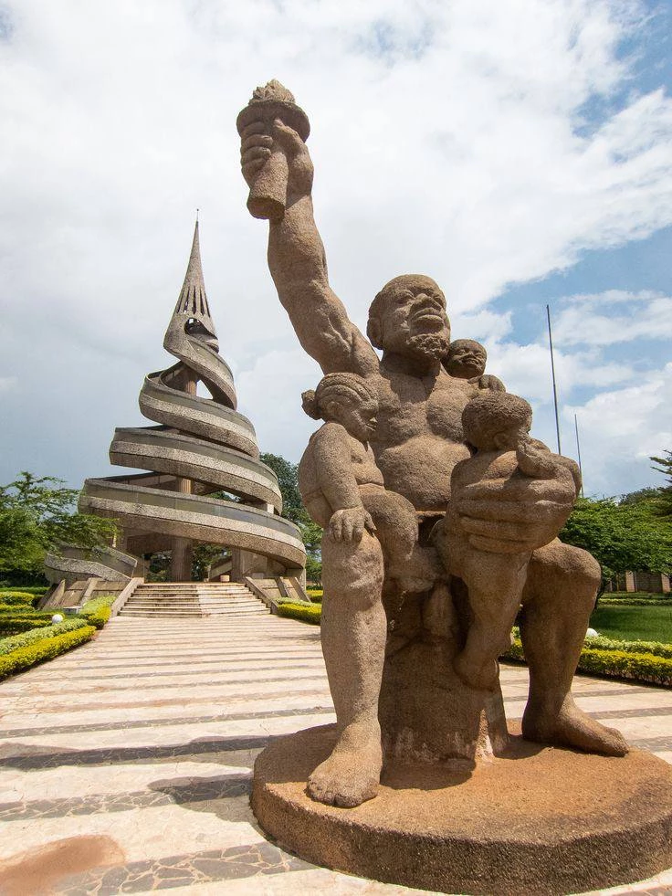

CAMEROON • GOVERNMENT • EDUCATION
Cameroon's political capital and administrative center, known for government institutions, education, diplomacy and cultural significance.
Yaoundé is the capital city of Cameroon and the center of government, diplomacy and national administration. Located among seven hills, the city serves as the headquarters of ministries, embassies, international organizations and key public institutions.
As one of Central Africa's most important administrative capitals, Yaoundé attracts professionals, students, diplomats and entrepreneurs from across the region.
Administrative institutions and embassies.
Universities and research institutions.
Services, consulting and entrepreneurship.
Housing, transportation and daily expenses.
Museums, history and local traditions.
Emerging sectors and development projects.
Yaoundé plays a vital role in shaping national policy, education and public administration. Many major government institutions and international organizations are headquartered in the city.
Its position as the nation's capital supports economic activity across professional services, education and administration.
Major sectors include public administration, education, telecommunications, banking, healthcare, construction, professional services and retail.
The city's growing population and expanding infrastructure continue creating opportunities for investment and entrepreneurship.
Popular destinations include the National Museum of Cameroon, Reunification Monument, Mvog-Betsi Zoo, Mount Fébé, Benedictine Monastery and the city's many cultural and educational institutions.
Yaoundé combines administrative importance with green landscapes, cultural heritage and academic influence.
Investment in infrastructure, education, digital services and urban development is helping Yaoundé strengthen its position as a modern administrative and economic center.
Its role as Cameroon's capital ensures long-term importance within Central Africa.